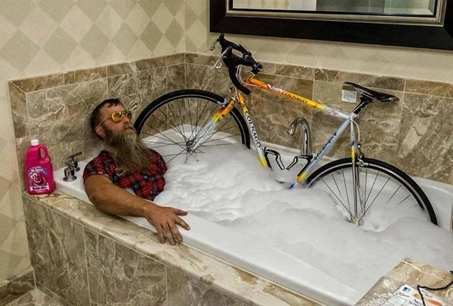

Esto sí que es un campeón
Dolor de cul
Peña ciclista

El ciclismo

es más que

una pasión.

LOVE CYCLING
Bienvenido a la web de la peña Dolor de cul
Año a año nos vamos afianzando como PEÑA, en la actualidad contamos con cerca de 130 socios de diversas edades y géneros..
En el año 2013 tenemos previsto organizar los siguientes eventos deportivos relacionados con la bicicleta:
-Quedada MTB
-Quedada Carretera
-Organizar DIA Bicicleta en Mota del Cuervo
-Comida campestre de los socios
-Carrera de Escuelas de Ciclismo
-Carrera MTB perteneciente al Circuito Diputación Cuenca
-Excursión Ciclista Popular
-Cena Peña Ciclista Herrada
Realizar salidas mas o menos organizadas entre los socios y no socios, tanto de carretera como MTB.
Varios de nuestros socios suelen participar en carreras, marchas y eventos deportivos en todo el calendario nacional, tanto de MTB, CICLISMO DE CARRETERA como TRIATLON, dejando a nuestra PEÑA en buen lugar.
Ir a visitar a nuestros PROS, los hermanos HERRADAS a las carreras para darles ánimos en directo.